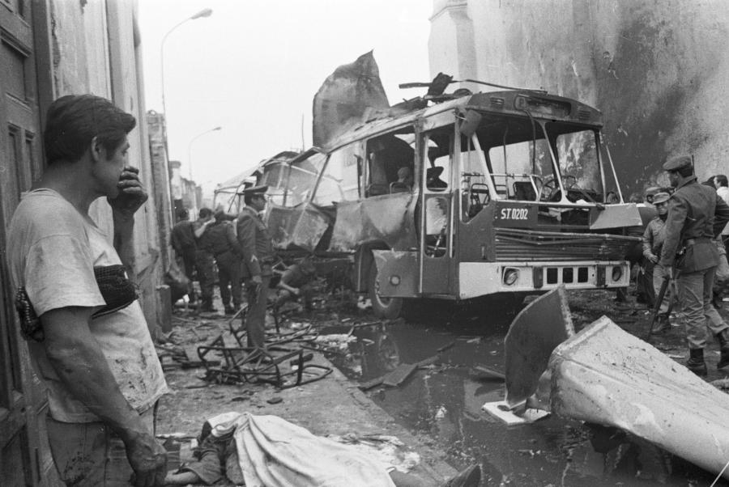

En 1980, el gobierno militar peruano convocó a elecciones por primera vez luego de un periodo de once años. En este contexto, Sendero Luminoso era uno de los pocos grupos políticos de izquierda que declinaron tomar parte de este proceso electoral y, en su lugar, optaron por iniciar una guerra de guerrillas maoísta en las zonas altas que rodean Ayacucho. El 17 de mayo de 1980, en la víspera de los comicios, quemaron ánforas electorales en el pueblo de Chuschi, en la provincia de Cangallo. Los perpetradores fueron rápidamente aprehendidos y se llevaron papeletas de votación adicionales para reemplazar las quemadas, por lo que las elecciones procedieron sin mayores incidentes y el acto recibió poca atención en la prensa peruana.
